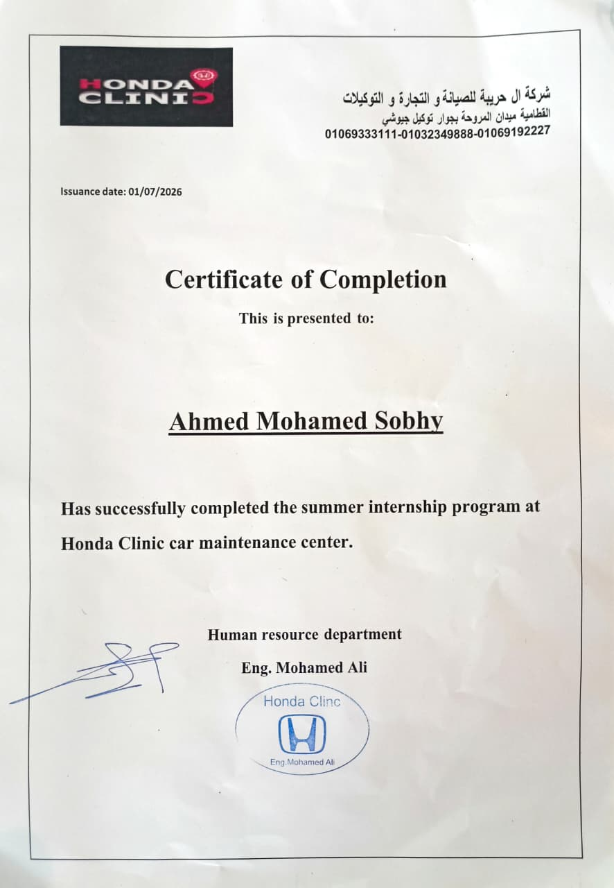
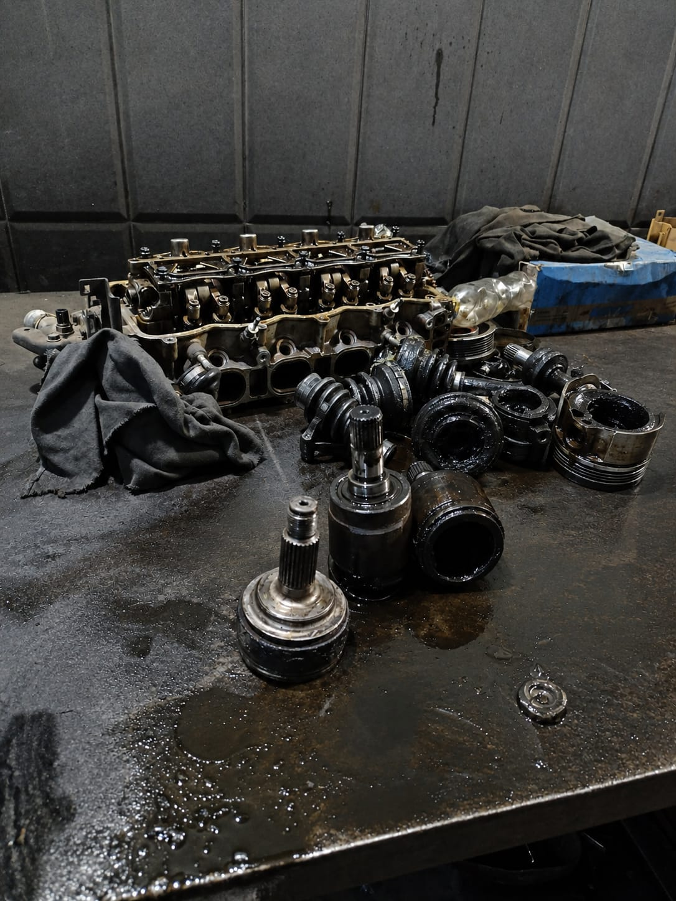
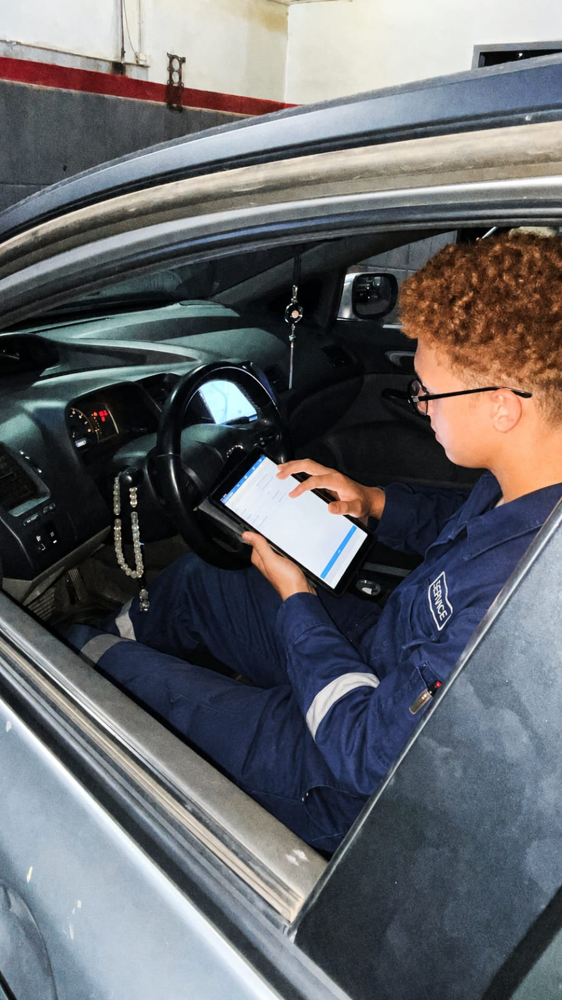
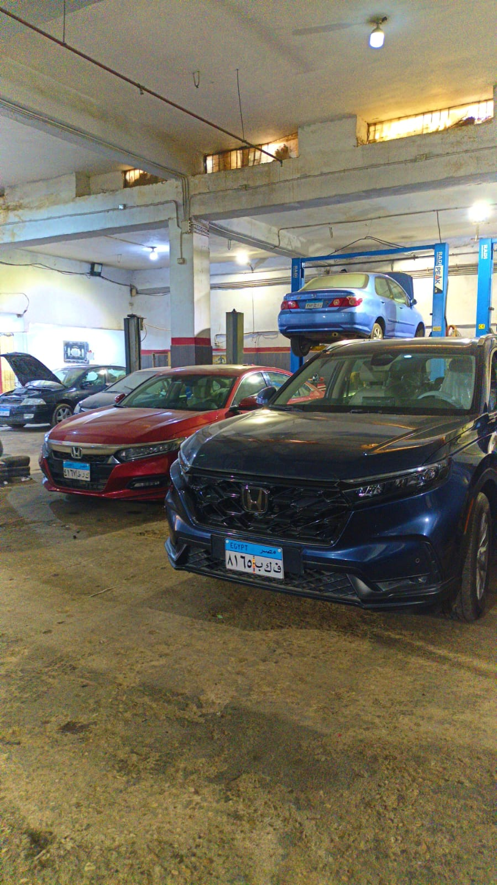
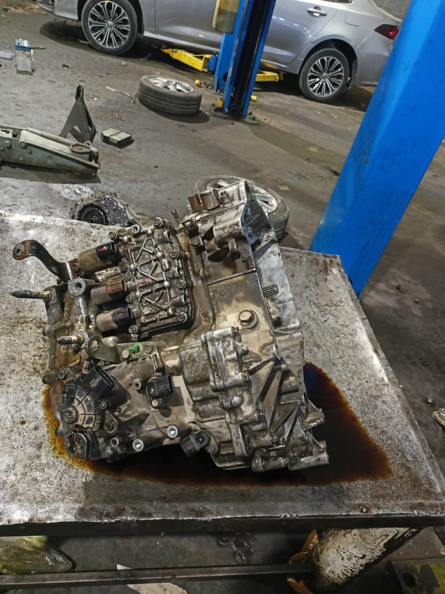
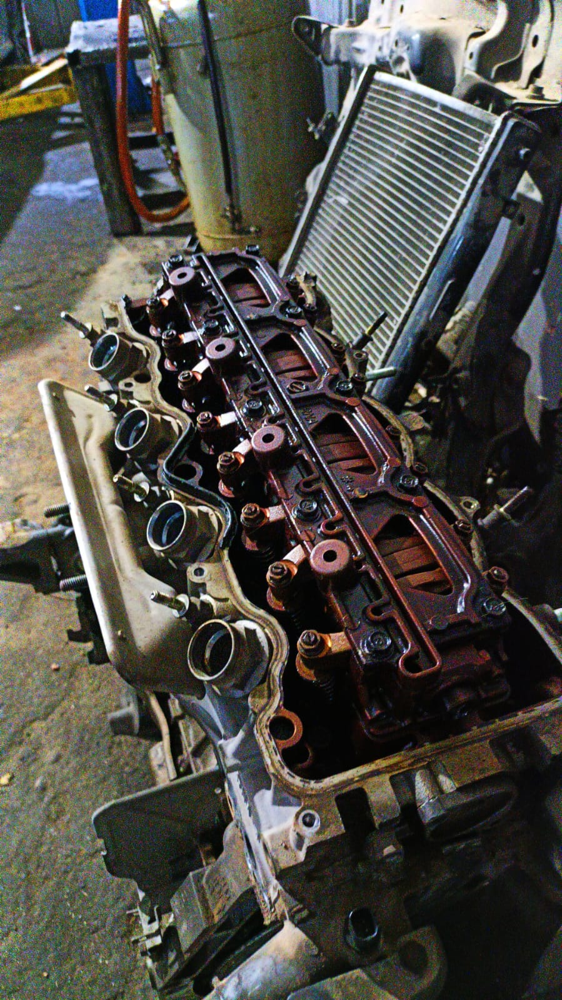

Overview & Role
The workplace, the internship, and my responsibilities.
Overview
Honda Clinic is an automotive service center following professional workshop practices and Honda service standards. The internship gives engineering students hands-on experience in automotive maintenance, diagnostics, and repair.
My Role & Responsibilities
- Worked alongside experienced technicians on real vehicles in the workshop.
- Assisted with vehicle diagnostics and identifying root causes of faults.
- Supported maintenance and repair procedures across vehicle systems.
- Learned professional workshop practices and how work is organized and prioritized.
- Followed Honda service standards and workshop safety practices.
Highlights & Tools
Key areas covered and the technologies used.
Technical Highlights
- Vehicle diagnostics and fault identification
- Scheduled maintenance procedures
- Repair work on real vehicles
- Workshop tools & equipment handling
- Honda service standards and quality practices
- Workshop safety and professional conduct
Technologies & Tools Used
Challenges & Impact
Hurdles I faced and the results I delivered.
Challenges & Problem Solving
- Diagnosing faults where one symptom can have several possible causes.
- Following structured diagnostic routines and verifying repairs by testing afterward.
- Staying efficient and organized under workshop time constraints.
Results & Impact
Completed the internship with hands-on experience in automotive maintenance, diagnostics, and repair, plus practical knowledge of workshop practices, vehicle systems, and Honda service standards.
Gallery
Moments from the internship.






Skills Gained
Skills I developed through this experience.
Keep Exploring
Continue through the experiences.